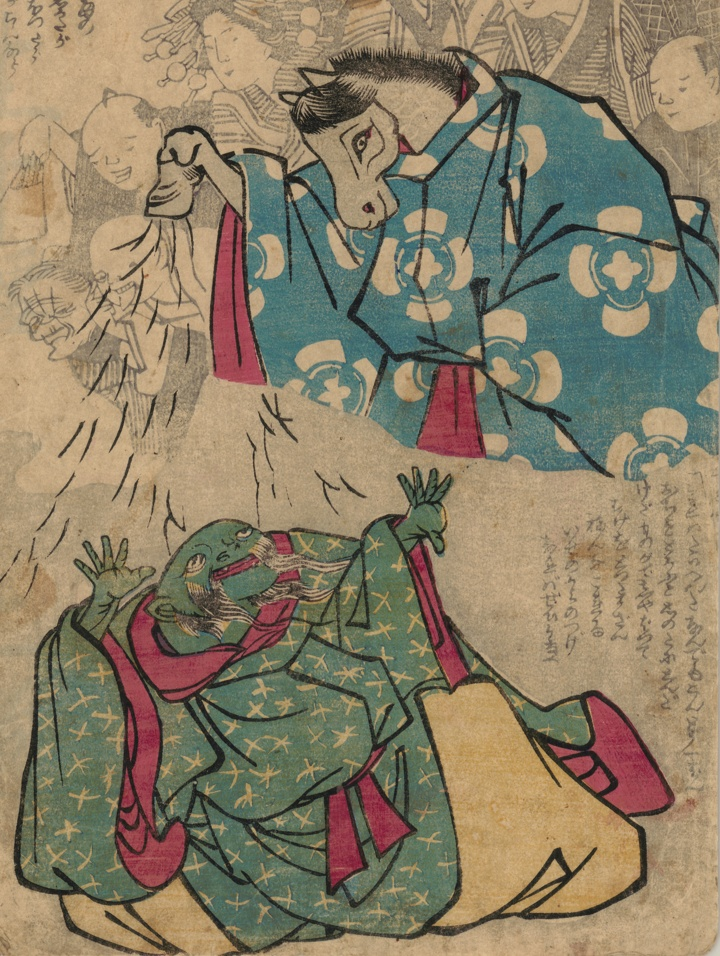

← 图鉴索引

伊勢大神宮の神馬が地震念魚（鯰）に毛を振り落として懲らしめている。
著作者：不明／出典：親書誌：U426_nichibunken_0466：[神馬と鯰]；シンメトナマズ／日付：2025／資源識別子：U426_nichibunken_0466_0001_0000
Copyright (c)2010- International Research Center for Japanese Studies, Kyoto, Japan. All rights reserved.